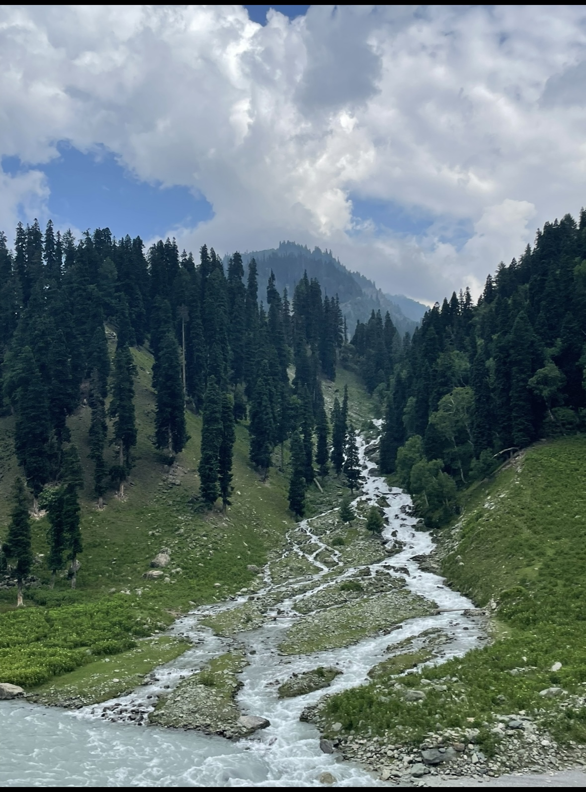
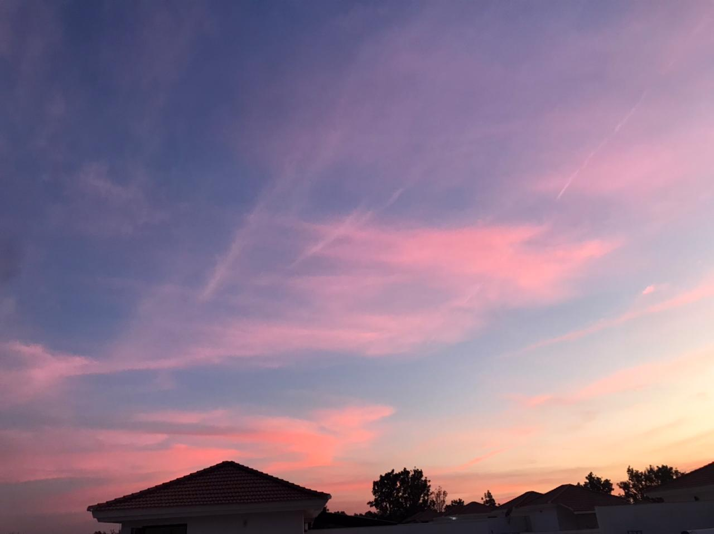
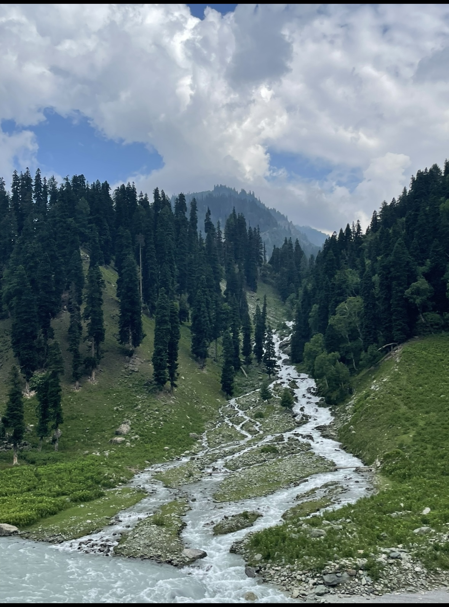
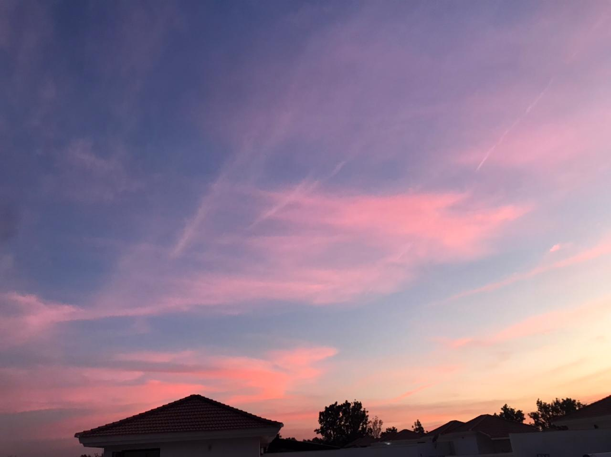
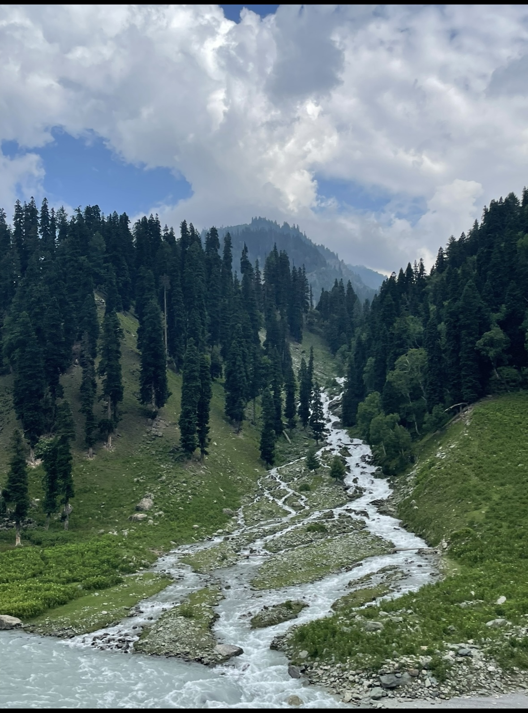
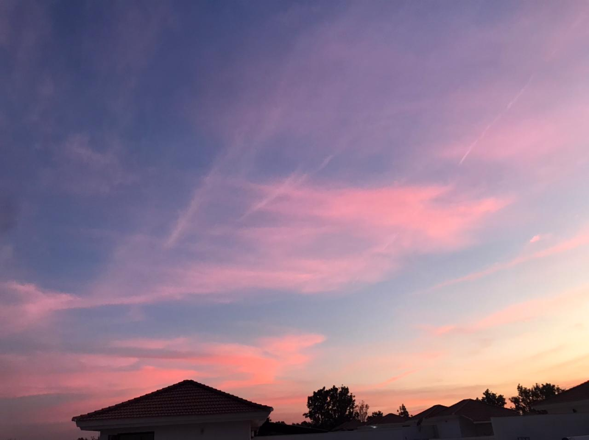

My name is Yashika Desai, and I am a computer science major at Michigan State University with a keen interest in innovation and problem-solving.I'm actively seeking a summer internship to apply my programming skills and contribute to innovative projects while gaining valuable industry experience.
When I am not coding, you can find me hiking and capturing the beauty of nature, especially sunsets. Below, I have shared some of my favorite sunset photographs for you to enjoy.


On this website, you will also find my résumé, detailing my academic achievements and technical skills. I am enthusiastic about contributing to innovative projects and eager to learn and grow in the software engineering field.
Thank you for checking out my portfolio! I hope you enjoyed exploring it. Please feel free to reach out if you have any queries or opportunities.